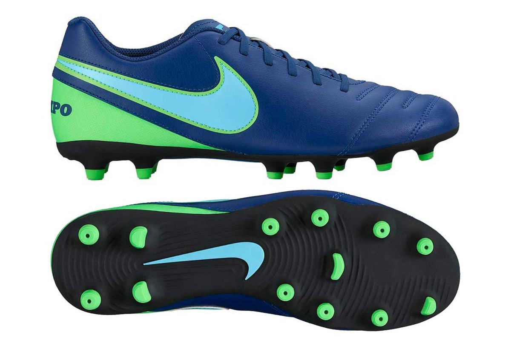
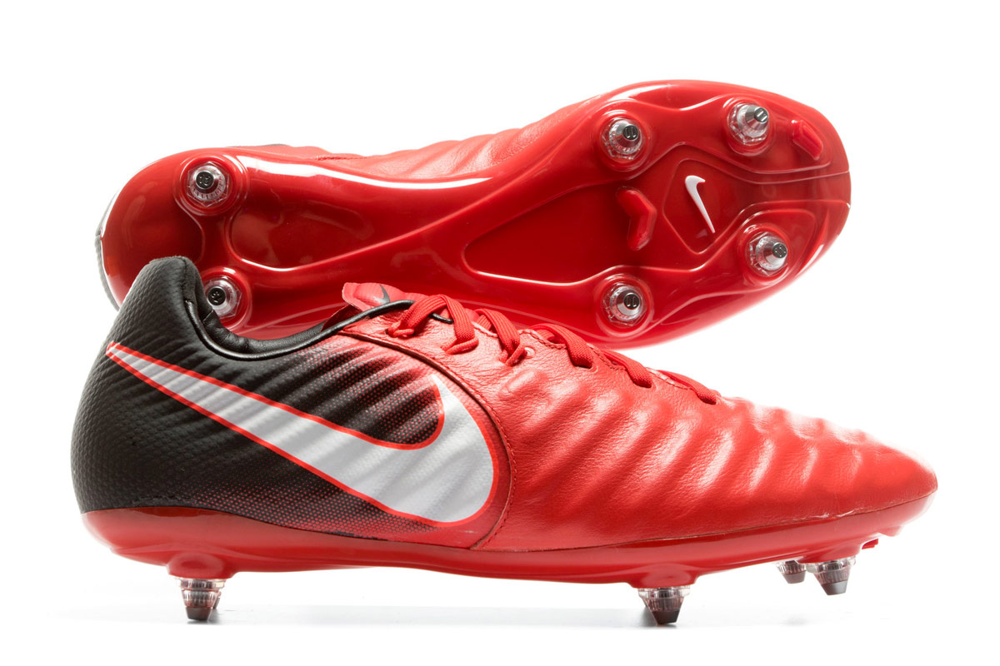
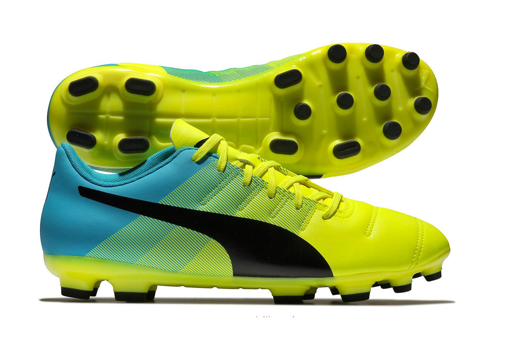
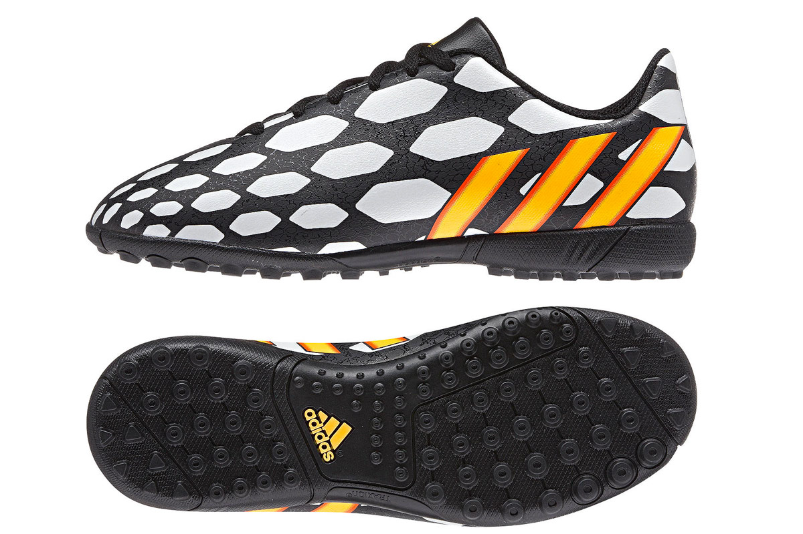
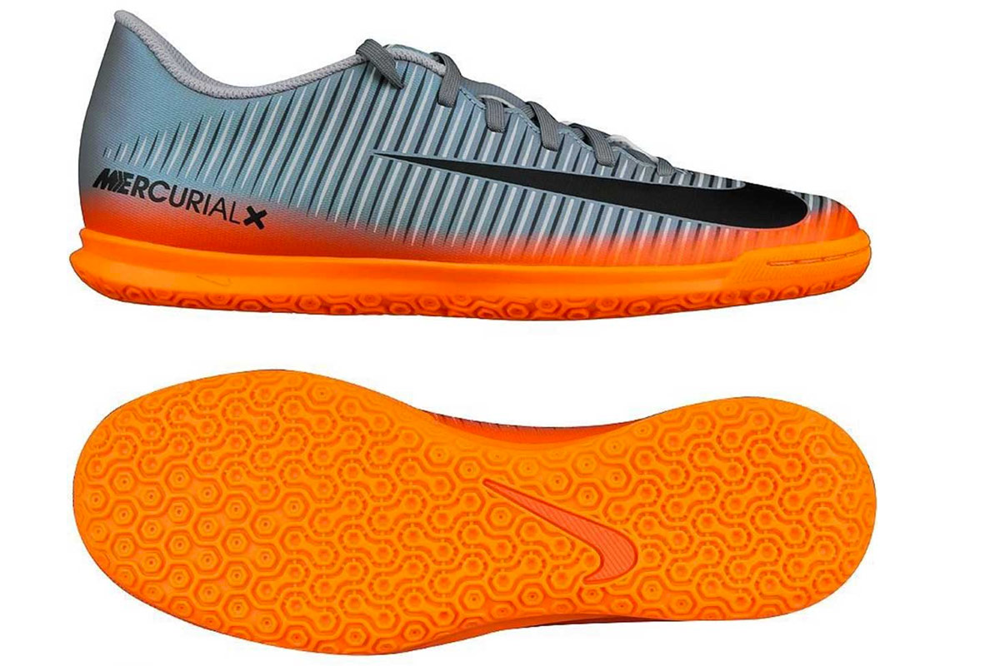

Đây loại giày đá bóng sân cỏ tự nhiên phổ biến nhất ở Việt Nam. Đế giày được thiết kế để đá ở các sân cỏ thật có nền đất cứng, lớp cỏ mỏng hoặc vừa phải với độ cao trung bình hoặc ngắn, không được tưới trước các trận đấu.
Số lượng đinh được bố trí ít hơn so với giày đinh AG, hình dạng và cấu trúc cũng không giống đinh AG. Giày đá banh đinh FG mỏng, thon và dài hơn so với giày AG, nhưng không vì vậy mà chất lượng kém hơn. Thay vào đó đinh FG được làm từ chất liệu nhựa carbon chất lượng cao, vậy nên bạn hoàn toàn có thể yên tâm khi sử dụng. Đinh giày thường được bằng nhựa đúc, gắn liền với đế nhựa. Hầu hết các sân cỏ tự nhiên tập luyện và thi đấu ở Việt Nam đều phù hợp với loại giày này, ví dụ: Mỹ Đình, Thống Nhất, Vinh, Hàng Đẫy,… Đây là giày cho sân cỏ thật, chính vì vậy các bạn không nên sử dụng để đá trên sân cỏ nhân tạo vì nó dễ gây lật cổ chân và cũng dễ gây chấn thương khi va chạm với người khác.
Giày đinh SG (Soft Ground) là loại đế thường được sử dụng trên mặt sân cỏ ẩm, ướt và được tưới nước thường xuyên, cỏ thấp (khoảng 8 – 10mm). Đây là loại đinh để đá ở các sân cỏ thật tiêu chuẩn cao ở giái bóng đá các nước phát triển của châu Âu (Anh, Pháp, Đức…), châu Mỹ (Mỹ, Brazil,…) châu Á (Nhật Bản, Hàn Quốc,…).
Đôi giày này thường có 6 đinh móng thường được sàm từ sắt hoặc nhôm,có thể tháo ráp bằng cờ lê. Giày đinh SG gồm 2 loai SG và SG-PRO. SG-PRO là những mẫu giày SG được bổ sung thêm một số đinh nhựa như đinh FG để cải thiện khả năng bứt tốc, chuyển hướng. Giày này hầu như không thấy trên sân cỏ nhân tạo, tuy nhiên ở những sân cỏ tự nhiên tại Việt Nam cũng thường xuất hiện giày này. Nó giúp chống trượt chân khá tốt nếu sân ướt.
Đây là mẫu giày đá bóng dành cho sân cỏ nhân tạo nhưng với những sân đạt tiêu chuẩn với lớp cỏ dày và cao. Đế giày khá giống với giày FG nhưng ngắn hơn và có nhiều đinh hơn.
Nếu bạn thích một đôi giày top-end trên mặt sân cỏ nhân tạo của Việt Nam, AG không phải sự lựa chọn tồi nhưng bạn phải làm quen với nó vì nó cũng gây chấn thương không khác gì FG. Đinh giày gồm đinh nón và đinh cánh. Cao hơn đinh giày TF nhưng chưa bằng đinh giày FG/SG.
Giày đế TF có lẽ là loại giày được dùng nhiều nhất ở Việt Nam. Đế TF thiết kế với rất nhiều đinh dăm cao su nhỏ bám sân tốt, thích hợp nhất cho đa số sân cỏ nhân tạo mini vì có độ dày thấp, độ lún không nhiều.
Giày đế TF thấp, nhiều đinh nhỏ và phân bố đồng đều trên toàn đế giày, tạo ra sức bám mặt sân tốt với điều kiện mặt sân cứng, cỏ ngắn cả ở điều kiện khô ráo lẫn mưa ướt. Các thao tác với bóng bằng gầm giày cũng đạt mức độ cao. Giày bóng đá đế TF không đủ mềm như đế AG, cũng không đủ vững chắc để đá sân trong nhà như đế IC. Nhưng nó có ưu điểm là đa năng, tạm ổn để chơi trên hầu hết các loại mặt sân.Với nhiều đinh cao su nhỏ dưới đế, nó giúp tránh bị lật cổ nhân và giữ độ bám sân tốt. Loại giày này được dân “phủi” yêu thích nhất!
Loại giày bóng đá đế bằng này thường được sử dụng trên sân futsal và bóng đá đường phố, sân có mặt phẳng và cứng như sàn gỗ, sân xi măng. Nó cũng phù hợp để đá trên sân cỏ nhân tạo thấp như ở Việt Nam. Mặt đế IC chống trơn khi chơi bóng trên bề mặt bằng phẳng.
Dù chơi được sân cỏ nhân tạo nhưng chủ yếu là phải quen chân, vì đôi khi bạn dễ bị trượt ngã khi thay đổi tốc độ đột ngột. Đặc điểm của đế này là gần như hoàn toàn phẳng, chỉ có một số vân trên đế. Không có những điểm gờ lên như đế TF. Đây là mẫu giày khá nặng do nó được thiết kế có độ bám sàn trên những mặt phẳng dễ trơn trượt. Ngoài ra, các hãng sản xuất giày đá bóng cũng thiết kế một số loại đế giày lai như HG hay CG nhưng không phổ biến nên anh em không cần quá quan tâm. Giày HG – Viết tắt của Hard Ground (nền cứng), đế HG là dòng đế được sản xuất riêng cho thị trường nội địa Nhật. Ở Nhật Bản, họ không bán hoặc bán rất ít những giày loại FG hoặc AG, thay vào đó là HG. Các sân cỏ tại Nhật có nhiều nét tương đồng với sân cỏ Việt Nam với nền tương đối cứng, cỏ thấp, do đó họ đã sáng tạo ra đế HG để tối ưu hóa hiệu năng tập luyện – thi đấu của các cầu thủ.